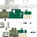

Build packs.
Keep control.
A pixel-first toolkit for Minecraft Bedrock creators. Package packs, build rank glyphs, validate manifests, and keep everyday utilities in one place.

Pick a tool.
Small tools that fit naturally into your Bedrock workflow — without an account, a dashboard full of noise, or unnecessary setup.
Pack exporter.
Export ZIP-based Bedrock packs into the official .mcpack or .mcaddon package extensions.
.mcpack and .mcaddon are ZIP-based import formats, not encryption formats. This tool packages or renames compatible archives locally; it does not add password protection or bypass server-side encryption. See Microsoft's file extension reference.
Choose a pack archive
Decrypt my pack.
Restore a legacy MCTools password-protected container using its original key.
Open encrypted container
Glyph generator.
Bring your rank icons into a bitmap-font atlas and assign private-use Unicode characters.
Bitmap source
Glyph output
The provider JSON maps each cell from left to right, then top to bottom. Keep the atlas dimensions and the cell size aligned with your texture.
JSON maker.
Format, minify and validate JSON snippets without losing your place.
Quick tip — pick a template to start with a useful structure, then validate before adding it to a pack.
UUID generator.
Fresh version 4 identifiers for pack headers, modules, and dependencies.
Generate IDs
Generated with the browser cryptographically secure random number generator.
Your identifiers
Keep the UUID in a manifest stable after publishing a pack. Changing it can make Minecraft treat the pack as a different pack.
Manifest maker.
Create a Bedrock manifest with fresh UUIDs and editable version fields.
Pack details
Manifest preview
Review min_engine_version and module type for your target Minecraft version before distributing.
Pack inspector.
Peek inside a ZIP or MCPACK, check its manifest and see what files are included.
Scan an archive
Server pack fetch.
The downloader is embedded here so you can work from the MCTools workspace.
Pack icon maker.
Prepare a crisp 256 × 256 PNG for the root of your Bedrock pack.
Source image
256 × 256 preview
Save the output as pack_icon.png in the root of the resource or behavior pack. Minecraft uses the filename to identify the pack thumbnail.
Text formatter.
Build Bedrock section-sign formatting and copy-ready tellraw or title commands.
Text settings
Live preview & output
Formatting codes use §. Some command contexts or plugins have different formatting support, so test the output in your target Bedrock version or server.